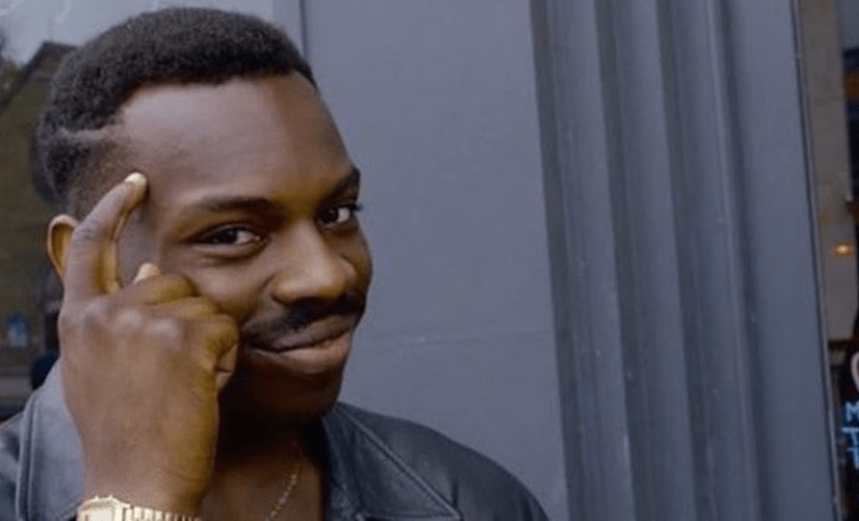

|
Clee During the livestream o Video stream takes up most of the page
o Background – clocks o Small control panel with Clee’s social media
links where they can find the secondary streams – maybe just the IMM
buttons with a different color? After the stream o Same page layout
as the stream o Video loops 24 hours continuously Home Page object:
A clock—Clee maybe sent Mitch their favorite clock? If not, ask for it
Gelli Deserted Island themed page – “Call-Out Island” – try having
this title at the top Eight memes on the page – when you click them
they get big, like a photo gallery Background – Sandy? Beachy?
Watery? Home Page object: Combine the two islands Gelli sent- use
the single palm (or one like it) from one and the textured bottom from
the other Jordan Essay on a single page with lots of image/video
references that he will send Images should appear when designated
 hovered over on desktop
Images should be embedded within the page on mobile The essay has
a shift halfway through – could the background and text color shift
gradually throughout? Black text on white to white text on black?
Home Page object: combining black power fist with thinking man meme
Martin A number of video vignettes (not hosted by an outside
platform) arranged throughout the page Martin will send a photo
shopped image of how he wants his page to look Background – Martin
will provide racist gifs/images to loop Possibly text – Martin will
provide it Home Page object: TBD – he will send pngs soon – Mitch,
you should reach out to him and remind him about this and his page
mock-up Other pages: Home Page – I will provide text on Friday—it
will probably just have a couple of sentences and the title of the
issue Chat room Info page – I will provide the text for this soon
– can just be a plain-ish page – maybe with same background as home
page
|
Clee During the livestream o Video stream takes up most of the page
o Background – clocks o Small control panel with Clee’s social media
links where they can find the secondary streams – maybe just the IMM
buttons with a different color? After the stream o Same page layout
as the stream o Video loops 24 hours continuously Home Page object:
A clock—Clee maybe sent Mitch their favorite clock? If not, ask for it
Gelli Deserted Island
themed page – “Call-Out Island” – try having this title at the top
Eight memes on the page – when you click them they get big, like a
photo gallery Background – Sandy? Beachy? Watery? Home Page
object: Combine the two islands Gelli sent- use the single palm (or
one like it) from one and the textured bottom from the other Jordan
Essay on a single page with lots of image/video references that he
will send Images should appear when designated text hovered over on
desktop Images should be embedded within the page on mobile The
essay has a shift halfway through – could the background and text
color shift gradually throughout? Black text on white to white text on
black? Home Page object: combining black power fist with thinking
man meme Martin A number of video vignettes (not hosted by an
outside platform)
arranged throughout the
page Martin will send a photo shopped image of how he wants his page
to look Background – Martin will provide racist gifs/images to loop
Possibly text – Martin will provide it Home Page object: TBD – he
will send pngs soon – Mitch, you should reach out to him and remind
him about this and his page mock-up Other pages: Home Page – I will
provide text on Friday—it will probably just have a couple of
sentences and the title of the issue Chat room Info page – I will
provide the text for this soon – can just be a plain-ish page – maybe
with same background as home page
|